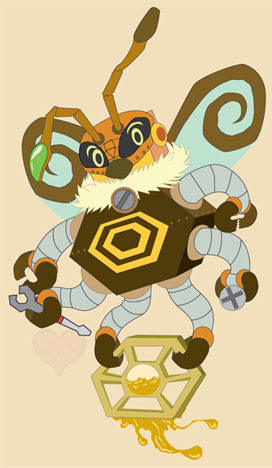

Sharon Nazario's Resume
Welcome
Please feel free to browse through the information presented here. The following contains a list of learned skills and software. There are also social media links below and some work samples of projects that have been created over time. Thank you for taking the time to read through this.
About Me
Sharon Nazario is currently a student majoring in graphic design. She focuses on her illustration skills. However, she is also able to create videos and manipulate images. She posts her work on Twitter, Facebook, and DeviantArt. Please be sure to refer to her Twitter in order to view the latest works and WIPs.
Skills
- Digital Media
- Graphic Design
- Video Production
- Video Editing
- Animation
- Web Design
- HTML5
- Illustration
- Image Manipulation
- Photo Editing
- User-Interface Design
Learned Software
- Adobe Photoshop
- Adobe Illustrator
- Adobe After Effects
- PaintTool SAI
- Windows Movie Maker
Social Media/Web
ArachneFlora Facebook Page
DeviantArt: SplendorOfArachne
ArachneBytes Twitter page;Be sure to check here for updates!
Link to GitHub fid repository
GitHub Page
☆ Work Samples ☆
Browsing Faith
Black Magik (Faux Ad)
The Bleeding Maiden
Sad Pierrot
Honey the β-bot

My Type of Wine
Thank you for taking the time to look through my resume.
Any references will be furnished upon request!